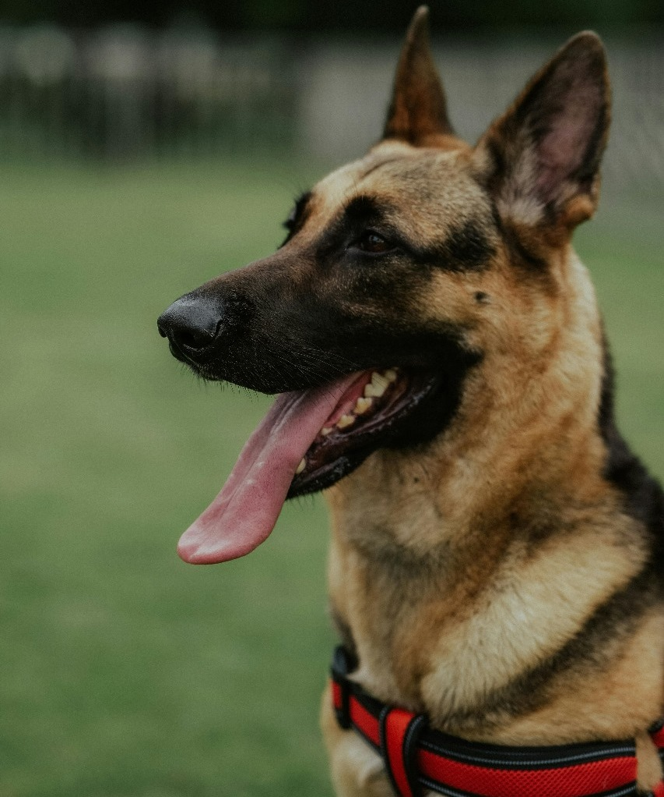
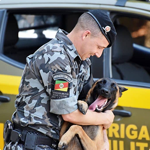
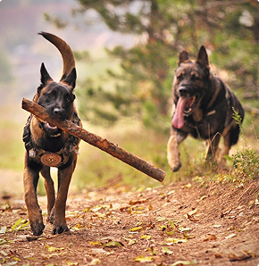

.png)
Os cães guias tem total acesso a qualquer estabelecimento e meio de transporte, se motoristas de táxis e de aplicativos se recusarem a transportar passageiros com cão-guia levaram multa.
Cães Guias
Os cães guias são tipos de cães de assistência, servindo para o auxílio de pessoas com baixa visão grave ou cegos. Eles são responsáveis por fornecer agilidade e segurança, parando em sinais, desviando de obstáculos e encontrando portas.
Curiosidades


Os cães-guias tem um dia internacional próprio e é comemorado dia 29 de abril, que também é o mês do abril laranja, o mês da prevenção contra os maus tratos aos animais.

Cães-guias nunca devem ser distraídos quando estão trabalhando pois pode tirar a concentração do mesmo.
Hermes - 4 anos
Labrador Retriver
Minha vocação é cuidar! Treinada com todo carinho para ser cão-guia, aprendi que minha missão é fazer a vida mais fácil e cheia de amor. Sou uma fofa equilibrada - séria quando preciso trabalhar, brincalhona nos momentos de descanso. Vou te surpreender com minha doçura e profissionalismo!
AdotarAtena - 6 anos
Golden Retriver
Meu instinto protetor e coração afetuoso me tornam única! Fiz do "ajudar" minha maior alegria. Sou aquela companheira que conhece o momento certo de agir e o momento de deitar no seu pé. Quer descobrir como é ter um amor que te guia?.
AdotarThor - 7 anos
Rottweiler
Coração de ouro, disciplina de aço! Como cão-guia profissional, sei exatamente quando ser seu apoio e quando ser seu amigo. Meu olhar atento não perde nenhum detalhe, mas meu rabo abanando não disfarça a alegria de estar com você. Pronto para ser seus olhos e seu melhor amigo!
AdotarPepe - 8 anos
Labrador Retriver
Transformo desafios em passeios alegres! Minha energia tranquila e treinamento impecável me tornam o parceiro ideal. Adoro meu trabalho, mas amo mais ainda os momentos de carinho depois das tarefas. Vou te mostrar como a vida pode ser mais doce e segura comigo ao seu lado!
AdotarLola - 5 anos
Labrador Retriver
Fui treinada para ser um cão-guia e tenho um coração cheio de amor para compartilhar. Sou delicada, esperta e adoro seguir meu humano em todas as aventuras. Meu treinamento me tornou cuidadosa, observadora e extremamente carinhosa.
Adotar